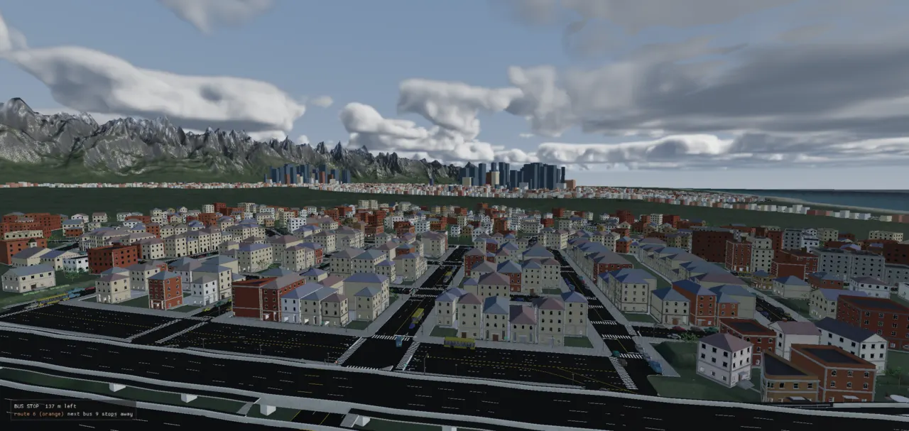
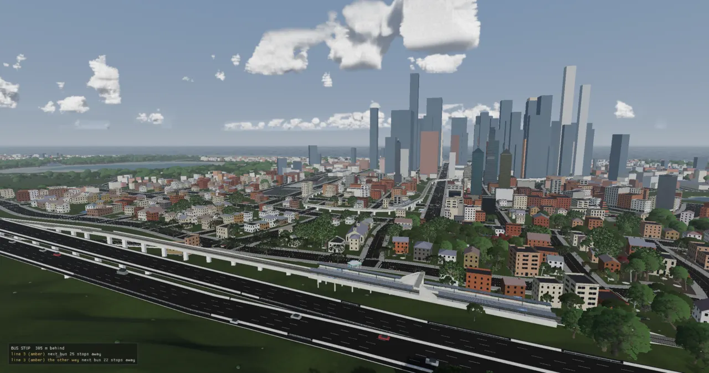

A city level takes minutes to generate, and the result is the same every time for the same inputs. So the engine computes it once, saves it as a bundle named by a hash of everything that went into it, and reads it back on every later load. This page explains that cache, the smaller caches beside it, how the GPU is fed from it a cell at a time, and the measured steps that took the island from a 10.5-minute first frame to under a minute.
Every level is generated from a small JSON file: a road graph, a terrain recipe, a few knobs for the city
simulation. Turning that into a playable world means meshing every road deck and junction, parcelling every
block into lots, growing every building from a grammar, grading the ground under it all, and handing the city
simulation tens of thousands of people with homes and jobs. Before ADR-0084 a lanelab level rebuilt its city
on every start: about 36 s of road building plus 30–40 s of lots and buildings, all recomputing a result that
was already known. On the island (island_8_nature) the cold build is 793 s for the city and 124 s
for the lots (ADR-0143) — the "28 minutes" Glenn asked about.
Three things make caching this harder than it sounds:
| Term | Meaning here |
|---|---|
| bake | Running the slow, deterministic generation once and saving its output. Also the saved output. |
| bundle | One level's bake: a single file, level.bundle, of named binary sections, with a
manifest.json beside it (ADR-0084). |
| section | A named byte range inside a bundle, e.g. lots/cell/12_-3/parts/7. The bundle does
not know what is in it; a codec does. |
| producer | A piece of code that turns a level's inputs into sections. There are two today: city (roads,
and track when the graph has any) and lots (lots and buildings). |
| key | A 64-bit FNV-1a hash over the bytes of everything a producer reads, plus a hand-bumped code tag. Same key, same output. |
| tag | A string constant (kLotsBuildTag, kLanesBuildTag) a developer changes
when the code's output changes. It is how the key "sees" code. |
| render cell | The square tile the city is split into for drawing and streaming. A bundle cell is a render cell, so a cell's meshes come out of the bundle ready to upload. |
| residency | The service that decides which cells are on the GPU right now, by distance from the camera (ADR-0095). |
The loader calls one function, obtainForLevel. It works out every producer's key, combines them into
the bundle's directory name, and either opens what is there or bakes it now. The command-line tool
rt_bake and the editor's "Bake level cache" button call the same bakeLevel(), so a bake
made by any of the three is the same file.
The path through obtainForLevel (src/engine/bundle/bake.cpp). RT_NOCACHE=1
skips every disk read and write and bakes in memory; RT_BUNDLE_REQUIRE=1 turns a miss into an error.
Two details make this robust. First, a bake is written into <key>.tmp-<pid> and the
manifest is the last file written, so a crashed or half-finished bake never looks like a finished one; the rename
into place is the commit. Second, the cold path packs and unpacks too: when the loader builds a city
without a cache (say under RT_NOCACHE), it still goes through the bundle in memory, so a warm load and
a cold load are the same geometry to the byte.
A bundle is deliberately dumb: a header, then sections appended one after another as producers write them, then the table of contents as JSON at the very end. Nothing in the container knows what a road or a building is. Why not glTF? ADR-0084 weighed it: tinygltf parses and copies the whole buffer, is float-only, caps a file at 4 GB and cannot memory-map or read part of a file — and partial reads are exactly what a streaming loader needs.
One bundle on disk. The header is patched last with where the table of contents landed; the reader maps the file once and hands out views into it.
constexpr char kMagic[4] = {'R', 'T', 'B', 'N'}; constexpr uint32_t kEndianMarker = 0x01020304u; // Header (64 bytes, little-endian): magic[4] u32 major u32 minor u32 endian u32 realBytes u32 reserved // u64 tocOffset u64 tocSize u64 sectionCount u64 reserved u64 reserved. std::vector<uint8_t> headerBytes(uint64_t tocOffset, uint64_t tocSize, uint64_t sectionCount) { BinWriter w; w.append(kMagic, 4); w.put<uint32_t>(kFormatMajor); w.put<uint32_t>(kFormatMinor); w.put<uint32_t>(kEndianMarker); w.put<uint32_t>(static_cast<uint32_t>(sizeof(Real))); w.put<uint32_t>(0); w.put<uint64_t>(tocOffset); w.put<uint64_t>(tocSize); w.put<uint64_t>(sectionCount); w.put<uint64_t>(0); w.put<uint64_t>(0); w.bytes.resize(kHeaderBytes, 0); return w.bytes; }
class Bundle { public: struct View { const uint8_t* data = nullptr; size_t size = 0; bool empty() const { return data == nullptr; } }; static std::unique_ptr<Bundle> open(const std::string& path, std::string* err); static std::unique_ptr<Bundle> fromMemory(std::shared_ptr<std::vector<uint8_t>> bytes, std::string* err); // ... bool has(const std::string& name) const; View section(const std::string& name) const; // empty view when absent std::vector<std::string> sections(const std::string& prefix) const; // sorted nlohmann::json json(const std::string& name) const; // null when absent or malformed bool checkSection(const std::string& name) const; // the bytes still hash to the TOC's fnv const nlohmann::json& manifest() const { return manifest_; } // ...
Each section's contents is the job of a codec in bundle/codecs.cpp, and every codec writes its
own magic and version first (MESH, CMSH, RTHT for height tiles…). A reader
that meets a version it does not know returns false, which the loader treats as a miss for that one producer. So
compatibility has four layers, all in the manifest: the container format (hard), each codec's version, each
producer's key, and the engine's own identity (a git describe string, compiler and build type),
which is recorded but only enforced with RT_BUNDLE_REQUIRE_ENGINE=1.
A producer is a small interface. The bake runs every producer that applies() to the level, in name
order, and each one writes sections under its own name.
class BundleProducer { public: virtual ~BundleProducer() = default; virtual std::string name() const = 0; virtual bool applies(const LevelInputs& in) const = 0; virtual ProducerIdentity identity(const LevelInputs& in) const = 0; // Writes every section under "<name()>/...". The progress fraction it reports is LOCAL (0..1 of this producer). virtual ProducerReport produce(const LevelInputs& in, BundleWriter& out, const ProgressFn* progress) const = 0; virtual double weight() const { return 1.0; } // relative cost, for the overall progress fraction };
The interesting method is identity(). It must hash every input the producer reads, because
anything it leaves out can change without the bake noticing. Here is the lots producer's: its tag and record
format, then the city producer's own key (so new roads always mean new lots), then the level blocks and Lua files
it reads. Note what it deliberately leaves out: the forest, which the lots never read, so a tree-species tweak on
the island does not re-bake its city.
bundle::ProducerIdentity identity(const bundle::LevelInputs& in) const override { bundle::ProducerIdentity id; id.tag = kLotsBuildTag; #ifdef RT_ENABLE_SCRIPTING const int scripting = 1; #else const int scripting = 0; #endif uint64_t k = bundle::fnv1aStr(std::string(kLotsProducerName) + "|" + std::to_string(lotcache::kLotsFormatVersion) + "|" + kLotsBuildTag + "|real" + std::to_string(sizeof(Real)) + "|scripting" + std::to_string(scripting)); if (const bundle::BundleProducer* city = bundle::findProducer(kCityProducerName)) { const bundle::ProducerIdentity c = city->identity(in); k = bundle::fnv1a(&c.key, sizeof(c.key), k); id.inputs = c.inputs; } else k = bundle::fnv1aStr("nocity", k); // ... the citysim block, the terrain block without its forest, water, the drawn-ground cell, // the authored spawn, and the bytes of style_book.lua and archetype_book.lua id.key = k; return id;
The bundle's folder is named by all the producers' keys together, sorted by name so the order of registration does not matter:
uint64_t combinedKey(const std::vector<std::pair<std::string, uint64_t>>& producerKeys) { std::vector<std::pair<std::string, uint64_t>> ks = producerKeys; std::sort(ks.begin(), ks.end()); uint64_t h = fnv1aStr("rt-level-bundle"); h = fnv1a(&kFormatMajor, sizeof(kFormatMajor), h); for (const auto& k : ks) { h = fnv1aStr(k.first, h); h = fnv1a(&k.second, sizeof(k.second), h); } return h; }
The keys chain. No stage has to remember to invalidate the next one: the next one hashes what came out of it.
The key cannot see code. When a change alters what a producer outputs for the same inputs, someone has to change
its tag by hand, or the old bundle keeps loading and looks current. That is the one failure the cache cannot catch
by itself (docs/bakes.md lists it, with "an input the lots stage reads that is not in its key", as the two
uncaught cases). The rules, from docs/bakes.md:
| Change | Bump |
|---|---|
| Anything the lot pass outputs: sculpting, massing, lot selection, grading, a part mesh | kLotsBuildTag (lots_producer.cpp; now "2026-10-23.3") |
| The roads the lanes builder makes | kLanesBuildTag (city_producer.cpp; now "2026-10-23.1") |
| Track and stations | kRailBuildTag (folded into the city key only for graphs with track) |
| The lot record's fields | kLotsFormatVersion + a field in tests/test_lot_cache.cpp |
| Interiors, furniture, the citysim, rendering — anything built at load, not read from the bundle | none |
A bump replaces the tag's comment with the reason for this bump; the history lives in the commits
(git log -G kLotsBuildTag). Because a bump makes every level's bundle stale and the level suite then
re-bakes everything it loads, the advice is to iterate with RT_NOCACHE=1 and bump once the change has
settled.
Changing one producer's inputs should not rebuild the others. When bakeLevel finds an existing bundle
whose manifest carries a producer's current key (a "donor"), it copies that producer's sections across instead of
running it. Producers can also read each other's output through the bundle under construction —
BundleWriter::readBack — which is how lots gets the city's ground and block holes without
a side channel, whether the city was rebuilt this run or copied.
That still wrote a whole new multi-gigabyte file each time. The 2026-10-05 addendum to ADR-0084 measured why it
hurt: a day of lots-tag bumps wrote about 270 GB of near-identical bundles. It also measured that a bake is
deterministic (a from-scratch rebake of metro_v2_test matched the cached bundle in 1643 of 1643 sections) and that
a typical change touches a few cells. So file bundles now align every section to 4 KB, and a new bundle
clones any section that comes out identical to one in the level's previous bundle, using the Linux
FICLONERANGE ioctl. On btrfs the two files then share those disk blocks.
bool BundleWriter::tryClone(const void* data, uint64_t size, uint64_t fnv) { #ifdef __linux__ if (!f_ || cloneFailed_ || sources_.empty() || pos_ % kFileSectionAlign != 0) return false; for (const CloneSrc& s : sources_) for (const SectionInfo& si : s.sections) { if (si.size != size || si.fnv != fnv) continue; { // THE BYTES, not just the hash: read the source's section and compare // ... pread the source's section into `have` if (got != size || std::memcmp(have.data(), data, static_cast<size_t>(size)) != 0) { ++cloneRefused_; continue; } } const uint64_t len = (size + kFileSectionAlign - 1) / kFileSectionAlign * kFileSectionAlign; if (std::fflush(f_) != 0) return false; struct file_clone_range r{}; r.src_fd = s.fd; r.src_offset = si.offset; r.src_length = len; r.dest_offset = pos_; if (::ioctl(fileno(f_), FICLONERANGE, &r) != 0) { // ...
Correctness never rests on the cloning: every section is still computed fresh, and only bytes proven identical are shared. On a filesystem that cannot share blocks (tmpfs, ext4, macOS) the bytes are simply written. Measured: a rebake of metro_v2_test after a one-line campus change wrote 3.4 MB of 1.07 GB. The rejected alternatives were a content-addressed section store (portable, but a new format and reader) and incremental lots computation (the lot pass is global — one campus per city, distance rules, grading — so weeks of work for a problem that was disk, not time).
Some things cannot be baked from the level file alone, because they need what the loader has built first. These
are cached the same way — named by a content hash of their inputs — but filled on the first load after a change
rather than by rt_bake.
| Folder | What | Keyed by | Size (docs/bakes.md) |
|---|---|---|---|
cache/levels/<key>/ | the bundle | the producers' keys | 1 GB (metro) to 8 GB (island) before ADR-0224 |
cache/terrain/<hash>.pyramid | the baked ground, every lot flatten folded in | the ground's content | 145–385 MB |
cache/terrain/<hash>.bin, maps_*, weather_* | erosion, cover maps, weathered ground | terrain settings | ~65 MB each, slow to remake |
cache/population/<hash>.pop | who lives and works where | places, street graph, agents, buses | small |
Before the pyramid, the ground's height was a formula evaluated per vertex at run time, and the CDLOD terrain's
finest cell was tied to a fixed level count, so when the world grew it coarsened to 11.7 m and buried streets
beside graded lots. The pyramid samples the final ground once — natural terrain, carved roads, terraces,
every lot pad — into a quadtree of 129 × 129 tiles of uint16 heights. It is sparse: a tile's four
children are kept only where the parent, drawn as triangles, misses them by more than 2 cm. Plains stop early;
streets and pad edges go down to 1 m cells.
struct HeightTile { TileKey key; float minH = 0.0f, maxH = 0.0f; float step = 0.0f; // quantization step (m) float error = 0.0f; // vs the level below, as drawn (0 at level 0) bool hasChildren = false; std::vector<uint16_t> q; // kTileSamples^2, row-major (z rows, x columns) double at(int i, int j) const { return static_cast<double>(minH) + static_cast<double>(q[static_cast<std::size_t>(j) * kTileSamples + i]) * step; } // Height at local cell coordinates (0..kTileCells), interpolated across the triangle // split the mesher emits: (a,b,d) when u >= v, else (a,d,c) -- a the cell's min corner, // d the max (terrain_lod.cpp, lodSurfaceHeight). double sampleLocal(double gx, double gz) const; };
The pyramid is written in the same bundle format (one terrain/L<level>/<tx>_<tz>
section per tile) and cached under cache/terrain/, keyed by the ground's content plus the pyramid's
spec. On metro_planned it is 4,501 tiles, 142 MB, built in 7.9 s on all cores when it misses (commit 463a6d8e). Since
ADR-0225 it is also the fast answer to "how high is the drawn ground here?": a baked level reads it in about nine
hash lookups instead of evaluating the field (about 50 µs a sample over the city), which is what made grass
streaming affordable.
Assigning every agent a home, a job, an errand stop, doors, hours and a commute took 5.5 s on the island. It is
deterministic, so it is cached too. The key hashes everything assignPlaces reads; a hit restores each
agent from a fixed-size record.
// THE POPULATION CACHE: the key is everything the decisions below read. popCache_ = PopulationCacheReport{}; std::string popPath; std::vector<PopRecord> cached; PopTail cachedTail{}; const bool verify = std::getenv("RT_POPULATION_VERIFY") != nullptr; if (!populationCacheDir_.empty()) { Fnv k; k.pod(kPopulationFormat); k.pod(static_cast<int32_t>(graph.nodeCount())); // ... every nav node and link, every place (site, door, hours, capacity, floor area), // every agent's state before assignment, the bus routes and the trip shares popCache_.key = k.h; char name[40]; std::snprintf(name, sizeof name, "%016llx.pop", static_cast<unsigned long long>(k.h)); popPath = populationCacheDir_ + "/" + name;
It is a cache, not a bake stage: a producer only sees the level's input files, but the population needs the nav
graph, the places and the fleet, which exist only once the level has loaded. RT_POPULATION_VERIFY=1
decides anyway and compares; on the island it reported 0 of 28,000 records different. assignPlaces
went from 5.5 s to 0.14 s.
The work came in a few concentrated pushes, each driven by a measurement. The timeline below is the centrepiece: above the line, time to load; below it, bytes on disk and on the GPU.
Load-time and size milestones, 2026-09-09 to 2026-10-23. Each figure is a before → after pair measured on the same machine and level in its own ADR or commit; figures from different boxes were measured on different levels and builds and are not directly comparable.
Glenn's question was "is it going to take me 28 min to load that city?". The measurement split it in two: the
28 minutes was a cold cache (city build 793 s plus lots 124 s), paid once. But even with the bundle warm,
the level loaded in 103 s and the first frame came at 634 s. Profiling was by stack sampling (no perf on this box:
eu-stack in a loop against the viewer's PID, counting engine:: frames), then the largest
cost first, each change checked to give identical answers:
engine::stronglyConnected,
iterative Tarjan) answers every pair. 33,012 random pairs agreed with the route search. Playable 634 → 117 s.What was left, and a later number. ADR-0143 lists the rest of the ~53 s, each part deterministic and cacheable the same way: forest rock placement (~7 s), blocks from road holes (~7 s), physics mesh shapes (~6 s), the rest of the city sim start (~7 s), drawn roads (~4 s). A month later ADR-0225 measured an island load of 187 s, cut to 169 s by reading the ground from the pyramid. That figure came from the fly-probe harness on a later state of the level, and the ADRs do not reconcile it with the 53 s; treat them as separate measurements.
On 2026-09-24 a new control command, mem?, showed what the viewer held on metro_planned: 6.5 GB of
meshes in 25,394 separate vkAllocateMemory calls, one per vertex buffer and one per index buffer,
with every vertex 56 bytes. Building part chunks were 4.9 GB of it; the CDLOD terrain was 3–4 MB. Near the 10 GB
card's limit uploads began failing from per-allocation overhead, not data. The same day's commits, in order:
| Step | What changed | Measured (metro_planned) |
|---|---|---|
| ADR-0094 (979a1f16) | One allocator (VMA), one 64 MB staging ring, deferred destruction instead of vkDeviceWaitIdle | 25,394 allocations → 28 blocks; peak 9.6 → 8.1 GB; load 225 → 180 s |
| ADR-0095 (463a6d8e) | The ground from a baked 1 m pyramid (fixes the buried streets; finer, so it costs) | peak 9.0 GB |
| Residency (b4d985ea) | Building cells streamed by camera distance, not all resident | part meshes 4,989 → ~1,170 MB; peak 9.0 → 5.2 GB; load 157 → 125 s |
| Deck welds (7eeb25ea) | Shared vertices on deck tops; no underside where a street lies on the ground | all meshes 2.7 → 1.9 GB; peak 5.2 → 4.2 GB |
| Kerb pass + ADR-0096 (4e1efe03, 04d4d5fb) | Hidden slab sides dropped; a 32-byte standard vertex (octahedral normal and tangent, RGBA8 tint), 56 bytes only where data needs it | 641 MB saved; meshes 1,078 MB; peak 3.6 GB |
The peak includes about 1.6 GB the desktop holds. Each row's numbers come from that commit's message or ADR.

By October the island's bundle was 8.59 GB, 6.64 GB of it building parts, each stored as raw float32 planes. ADR-0224 stores a mesh the way the GPU will take it anyway: the 32-byte standard vertex of ADR-0096, but with an exact float normal, then compressed losslessly with meshoptimizer's vertex and index codecs.
// The Vulkan GpuVertexPacked, but for the normal: that stays exact, because the loader re-derives world-planar UVs // from it (applyWorldPlanarUVs) and at island coordinates an oct normal's 5e-5 rad would move u by ~0.25 m struct CompactVertex { float position[3]; float normal[3]; int16_t tangent[2]; float texcoord[2]; uint8_t color[4]; }; static_assert(sizeof(CompactVertex) == 40, "the standard vertex with an exact normal"); void putEncoded(BinWriter& w, const void* data, size_t count, size_t stride) { std::vector<uint8_t> buf(meshopt_encodeVertexBufferBound(count, stride)); buf.resize(meshopt_encodeVertexBufferLevel(buf.data(), buf.size(), data, count, stride, 3, 1)); w.putVec(buf); }
Why keep the normal as floats? The loader re-derives world-planar texture coordinates from it; on a round tower far from the origin an octahedral normal's tiny error would make the brick joints zigzag. Positions and UVs stay exact so neighbouring cells still meet bit for bit; a tint outside [0, 1] or a tangent that carries data keeps a float plane. What is lost is only what the upload drops anyway: the tangent's length and tint precision past 8 bits.
| Section (island_8_nature) | Before | After |
|---|---|---|
| lots/parts | 6.64 GB | 1.21 GB |
| lots/flat (far facades) | 0.59 GB | 0.12 GB |
| city concrete / asphalt | 0.485 / 0.185 GB | 0.092 / 0.066 GB |
| whole bundle | 8.59 GB | 2.50 GB (parts) → 1.62 GB (city too) |

compact-bundle-2026-10-23): the city drawn from
the compact bundle. The ADR's claim is "same pixels" at a fifth of the bytes.A bundle cell is a render cell, which is what lets the world stream. engine::Residency (ADR-0095)
holds one item per cell and tier: where it is, the distances at which it is wanted, and a two-phase load —
prepare() on a worker thread (read from the bundle, decode, drape), then commit() on the
render thread (upload, create entities). Each building cell has three tiers: full detail near, flat facades
further out, and a mass-box stand-in that is always resident.
The rings are schematic, not to scale. Figures are from residency.h/.cpp and ADR-0149/0226.
// AHEAD OF A MOVING CAMERA (the city's next ten #10, a fly-around): where it will be in ~0.75 s at this frame's // step (45 frames), so a cell starts streaming before the camera is on it; an item counts as near when it is near // either point. And when moving fast (over ~90 m/s at 60 fps) twice the prepare jobs. Vec3 ahead = camera; double step = 0.0; if (haveLast_ && !jump) { const Vec3 d = camera - last_; step = std::sqrt(d.x * d.x + d.y * d.y + d.z * d.z); ahead = camera + d * 45.0; } const int maxPreparing = step > 1.5 ? 2 * kMaxPreparing : kMaxPreparing;
How it got here. The first residency client (b4d985ea) promised "a brief loss of detail, never a hole", but the stand-in proxies only drew beyond the facade distance, so inside that ring a cell whose tiers had not arrived drew nothing. Every aerial shot after a camera jump showed bare blocks. ADR-0149 made the stand-ins cover (a count per cell; while it is zero the proxies draw at every distance), added the look-ahead, and made jumps stream. A scripted fly across Saltwood at 200 m/s went from empty blocks beyond the first streets to full detail throughout. Two weeks later grass got the same treatment (ADR-0225: 3D distance, half the job pool, the same 0.75 s horizon; bare tiles 921 → 0), and tiers stopped popping (ADR-0226: a 0.35 s dither crossfade, p99 frame time unchanged at 24.6 vs 24.8 ms).
Streaming exposes a classic caching bug, and the indoor cache is the worked example. A tower streams its interior
in storey windows: the street window has shop units, a window at storeys 32–37 has none. The city renderer cached
each building's shop-unit-to-place list by building id the first time its interior was seen. Swinging on the grapple
from the street to the 40th storey in seconds, the cached list had N units while the new interior's table had room
for one, and stepIndoors wrote one byte past it. The viewer crashed with free(): invalid next size
far away in unrelated code; an AddressSanitizer build named the real write.
// `unit` is by the index of the interior's shop units, so it holds only for the interior it was made for: a tower // streams its interior in storey windows, and the ground floor's (shops) and the 40th's (none) differ -- `units` // says which one this is (their count and floor heights), and a different one is matched afresh (#114: a cached // list of N units indexed a 1-entry table when the player swung from the street to the top floors) struct BuildingPeople { PlaceId whole = kNoPlace; std::vector<PlaceId> unit; std::vector<double> units; }; std::unordered_map<int, BuildingPeople> buildingPlace_;
It is the same rule the bundles follow, at a smaller scale: a cache's key must name everything its contents depend
on. "This building" was not enough; "this building's interior, with shop units at these heights" is. The check was 320
visits into the 12 tallest downtown towers under ASan, 225 window changes rematched, no report
(tools/asan_storey_probe.py).
Nothing deletes an old bundle automatically. Every tag bump, engine change and level-suite run writes a fresh one, and by 2026-10-04 the buildings worktree held 517 GB of level bundles and 39 GB of pyramids: 304 bundles, of which 22 were the newest for their level. Shared blocks made each new bundle cheap, but the old ones still pin blocks the newest no longer uses.
| Command | What it does |
|---|---|
rt_bake <level.json> [--force] | bake (or confirm current); --force rebuilds even when keys match |
rt_bake --status <level.json> | is the level baked, is the bake current, its size (the editor's Level cache panel) |
rt_bake --inspect <dir> / --sections <dir> | the manifest, producers and keys / every section's name, size and hash (diff two bakes) |
rt_bake --audit <dir> | every baked mesh through the mesh audit (ADR-0172) |
rt_bake --prune [--yes] [level.json …] | list (or delete) every bundle not the newest for its level and not the current bake of a listed level, then the terrain and population files every level that used them has moved on from |
rt_bake --glb / --glb-split cell | also export the city as glTF for Blender: an export view, not the cache |
Terrain and population files are named by a content hash, so levels that build the same ground share one. Since
ADR-0256 each has a record beside it (<file>.uses): the levels whose loads used it, and when.
The prune deletes one once every level that used it has used a newer file of its kind, and keeps a shared file
while any of its levels still uses it. Files from before the records are kept; Glenn's rt-bake-cleanup
skill (~/.claude/skills/rt-bake-cleanup/prune_bakes.py, outside the repo, dry run by default) ages
those out by date across every checkout.
The trap. "Newest" is not "current". Running old code (a baseline checkout, then the level
tests) bakes newer bundles under old keys; a prune after that keeps those and deletes the current ones. On 2026-10-14
island_8, metro_lanes and river_town had to be rebaked for this reason. Prune before an old-code run, or check
rt_bake --status on each level first and pass the levels to keep.
When a change does not show, docs/bakes.md has a recovery ladder, least drastic first: run once with
RT_NOCACHE=1 (if that fixes it, the bundle is stale); rt_bake <level> --force and then
find the missing tag bump or key input; drop that level's folders; and last, rm -rf cache/levels cache/terrain
cache/population — always safe, since every one of these is a cache.
Still owed (memory note rt-bake-cache-housekeeping, docs/bakes.md): RT_BUNDLE_VERIFY (rebuild in
memory and compare section hashes, nightly, to catch a forgotten tag bump); the level suite pruning after itself.
bakeLevel, obtainForLevel, prune, the editor's cache statusTHE POPULATION CACHE)population_read_from_the_cache_is_the_population_decided| Switch | Effect |
|---|---|
RT_NOCACHE=1 | bake in memory; read and write no cache (bundles, pyramids, population) |
RT_BUNDLE_WRITE=0 / RT_BUNDLE_REQUIRE=1 / RT_BUNDLE_REQUIRE_ENGINE=1 | read but never write / a miss is an error / another engine's bundle is a miss |
RT_BUNDLE_DIR | the bundle root (default cache/levels) |
RT_POPULATION_VERIFY=1 | decide the population anyway and compare with the cache |
RT_BAKED_TERRAIN=0, RT_GROUND_FIELD=1 | draw the ground from the formula / read the drawn ground from the field, not the pyramid |
RT_STREAM_BUILDINGS=0, RT_NO_STANDIN=1, RT_NO_TIER_FADE=1, RT_TIER_FADE_S | A/B switches for streaming, stand-ins and the crossfade |
RT_VERTEX_FULL=1 | every mesh in the 56-byte vertex (A/B for ADR-0096) |
RT_RESIDENCY_CSV=path | one line per cell arrival, to measure what arrived late |
mem?, bundle? | control-socket queries: GPU heaps by kind; the last bundle status line |